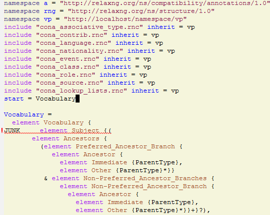
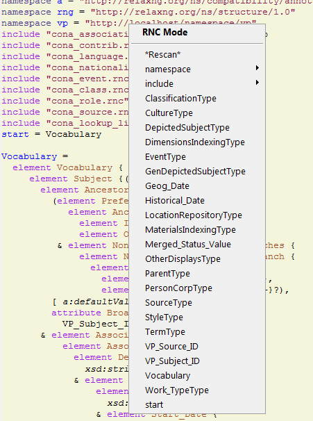

README
Source: https://github.com/VladimirAlexiev/rnc
Table of Contents TOC
- RNC
- RNC Tools
- Emacs rnc-mode
- Emacs flycheck
- rncfix
- Scripts
- RNC Schemas
- EAD
- EAD3
- EAC CPF
- EAG
- CDWA
- LIDO
- CONA
RNC
The ISO DSSSL group defines a number of XML schema definition languages. Amongst them:
- XSD is the most verbose and unwieldy way for understanding a XML schema
- Then comes RelaxNG XML (RNG).
- RelaxNG Compact (RNC) is most compact and easy to understand. RNC is even easier to read than XMLspy diagrams, because it gives you a ready overview of the schema and convenient search. RNC clearly shows deeply nested "matroska" style schemas, like the screen shots below.
RNC Tools
Tools for working with RNC include:
- XSDtoRNG.xsl, which converts XSD->RNG. It still does not cover all XSD cases and is in development, but does a decent job.
- In particular, it converts all
xsd:includetorng:includewithout caring whether the included schema is converted or not. And since it cannot handle some included schemas (eg OGC Features, which is a complex multi-file schema), you'll get errors about them. Comment out such includes. - It also can't reliably identify which is the start element. I've added a string param for this, but if there are multiple start elements, you'll need to touch the schema manually. See LIDO below.
- In particular, it converts all
- trang (manual), which converts RNG->RNC and other conversions
- jing (doc), which validates RNG and RNC.
- The binaries are at google code, the source of both trang and jing is moved to https://github.com/relaxng/jing-trang
- Note: if you get errors like this:
Exception in thread "main" java.lang.StackOverflowError at com.thaiopensource.relaxng.pattern.BinaryPattern.checkRecursion(BinaryPattern.java:16)
for deeply nested schemas then you need to increase the java stack, eg
java -Xss8M -jar c:/prog/jing-20091111/bin/jing.jar -c schema.rnc
Emacs rnc-mode
In emacs I use rnc-mode, flymake and jing to do syntax highlighting and "on the fly" syntax checking. Use a patched rnc-mode to set -Xss for jing as described above. I use a setup like this:
(setq rnc-enable-flymake t rnc-jing-jar-file "c:/prog/jing-20091111/bin/jing.jar" rnc-jing-java-options "-Xss8M" ; increase stack size to 8M, else get ;; Exception in thread "main" java.lang.StackOverflowError ;; at com.thaiopensource.relaxng.pattern.BinaryPattern.checkRecursion(BinaryPattern.java:16) rnc-enable-imenu t rnc-indent-level 2 )
Below you see the results of "on the fly" syntax checking at the word "JUNK":

I also use Emacs imenu to get a "table of contents" of the schema, and jump to the definition of the symbol at cursor.

Emacs flycheck
rnc-mode uses flymake to check syntax on the fly. However, flymake has been superseded by flycheck, because it makes it a lot easier to define checkers and supersedes packages like smart-compile.
Install it with the package manager, then set it up like this:
(flycheck-define-checker rnc-jing "RNC syntax checker using jing. Home: https://github.com/relaxng/jing-trang (was https://jing-trang.googlecode.com). Binary: https://jing-trang.googlecode.com/files/jing-20091111.zip. Manual: https://htmlpreview.github.io/?https://raw.githubusercontent.com/relaxng/jing-trang/master/doc/jing.html" :command ("java" "-Xss8M" ; increase stack size to 8M, else get ;; Exception in thread "main" java.lang.StackOverflowError ;; at com.thaiopensource.relaxng.pattern.BinaryPattern.checkRecursion(BinaryPattern.java:16) "-jar" "c:/prog/jing-20091111/bin/jing.jar" "-c" source) :error-patterns ((error line-start (file-name) ":" line ":" column ": " (or "error" "fatal") ": " (message) line-end) (error "fatal" ":" (message) line-end) (info line-start (file-name) ":" line ":" column ": " (message) line-end)) :modes rnc-mode) (add-to-list 'flycheck-checkers 'rnc-jing) (global-flycheck-mode)
Don't forget to set rnc-enable-flymake nil to avoid conflicts.
rncfix
./bat/rncfix.pl converts ugly RNC annotations, eg:
a:documentation [
"\x{a}" ~
" \x{a}" ~
" See http://www.w3.org/XML/1998/namespace.html and\x{a}" ~
" http://www.w3.org/TR/REC-xml for information about this namespace.\x{a}" ~
"\x{a}" ~
to nice RNC comments, eg:
## See http://www.w3.org/XML/1998/namespace.html and ## http://www.w3.org/TR/REC-xml for information about this namespace.
It also does a bunch of other cosmetic fixes that hopefully make the RNC easier to read, eg:
- put trailing
}+*to the line above - remove superfluous empty lines (commented or not)
- put empty line before definitions (word or comment at beginning of line)
Scripts
./bat/ includes batch files for Windows (the horror!) that I use under cygwin.
- ./bat/xsd2rng.bat: XSD->RNC using xsltproc and XSDtoRNG
xsd2rng ead
- ./bat/xsd2rnc.bat: XSD->RNC using xsltproc, XSDtoRNG.xsl, trang and rncfix
xsd2rnc ead
- ./bat/rncfix.bat: runs rncfix
rncfix ead-tmp.rnc > ead.rnc
- ./bat/rng2rnc.bat: RNG->RNC using trang and rncfix
rng2rnc ead
- ./bat/jing.bat: runs jing to validate a RNG or RNC
jing -c ead.rnc
- ./bat/trang.bat: runs trang to convert RNG->RNC
trang ead.rng ead.rnc
- ./bat/rnc-nocomment.bat: removes all comments from RNC, making it more compact and easier to see the structure. But you need to already know what the elements mean
rnc-nocomment ead.rnc > ead-nocomment.rnc
They assume all files and trang.jar are put in c:; except jing in c:-20091111(has several dependencies): so you need to modify them for your setup.
RNC Schemas
I have collected or converted the following RNC schemas related to GLAM (galleries, libraries, archives and museums)
EAD
./ead.rnc (nocomment): EAD 2002 version 20080421 (Encoded Archival Description) by Society of American Archivists and Library of Congress, converted by Vladimir Alexiev. EAD is used widely by archival institutions and projects, including APex (Arvhives Portal Europe) and EHRI (European Holocaust Research Infrastructure). Uses the following prefixes:
| prefix | what | example |
|---|---|---|
e. |
element definition | e.chronlist is element chronlist, which includes various attributes and a sequence of elements chronitem |
a. |
attribute definition | a.identifier is a simple attribute identifier that consists of an xsd:token |
m. |
element model | m.inter.noquote is alternative of e.chronlist e.list e.table |
m.mixed |
mixed element model | m.mixed.basic consists of text and/or e.abbr e.emph e.expan etc |
am. |
attribute model (group) | am.common.empty consists of elements id altrender audience |
EAD3
EAD3: upcoming revised version, developed natively in RNG. Schemas listed in increasing recency:
- https://raw.githubusercontent.com/SAA-SDT/EAD-Revision/develop/ead3.rng: the namespace http://ead3.archivists.org/schema/ redirects to this
- https://raw.githubusercontent.com/SAA-SDT/EAD2002toEAD3/develop/ead3.rng
- https://raw.github.com/SAA-SDT/EAD-Revision/master/ead3.rng
- ./ead3.rnc (nocomment): converted from the most recent schema by Vladimir Alexiev
EAC CPF
EAG
- ./eag.rng
- ./eag.rnc (nocomment): EAG 2012 version 0.1e 20120828 (Encoded Archival Guide), APEx project (www.apex-project.eu), converted by Vladimir Alexiev.
EAG is used for describing archival institutions. See description. The above is generated from eag_2012.xsd. An alternative official RNC exists, marked as follows:
# Schema generated from ODD source 2015-03-06T09:33:00Z. # Edition: Version 2.7.0. Last updated on # 16th September 2014, revision 13036 # Edition Location: http://www.tei-c.org/Vault/P5/Version 2.7.0/
CDWA
./CDWAlite.rnc (nocomment): CDWA version 1.1 20060712 (Categories for the Description of Works of Art) by ARTstor and J Paul Getty Trust, converted by Vladimir Alexiev. CDWA is used for describing museum objects and works of art, corresponding to the CCO content standard.
LIDO
- ./lido.rnc (nocomment): LIDO version 1.0 20101108 (Lightweight Information Describing Objects) by ICOM-CIDOC Working Group Data Harvesting and Interchange, converted by Vladimir Alexiev
- ./xml.rnc: defines
xml:attributeslang, base, space. Used by LIDO & EAG.
LIDO is also used to describe museum objects and works of art. It's based on CDWA and MuseumDat and is quite more complex.
For LIDO and CDWA I made some manual corrections
- This sets one start element, and introduces the parasitic name "starting_lidoWrap"
start |= starting_lidoWrap starting_lidoWrap =
Corrected to two start elements:
start = lido | lidoWrap
- XSDtoRNG currently can't grok the OGC GML schema so I've commented out
# rng:include href="http://schemas.opengis.net/gml/3.1.1/base/feature.rng"
You'll get 3 errors at
gmlComplexType = Point*, LineString*, Polygon*
- Moved some comments up, and collapsed simple definitions into one line, eg:
administrativeMetadata = element administrativeMetadata { ## Definition: Holds the administrative metadata for an object / work record. ## How to record: The attribute xml:lang is mandatory ... administrativeMetadataComplexType}becomes
## Definition: Holds the administrative metadata for an object / work record. ## How to record: The attribute xml:lang is mandatory ... administrativeMetadata = element administrativeMetadata {administrativeMetadataComplexType}
CONA
I've also converted Getty's CONA schema to RNC, contact me if you would like to work with it